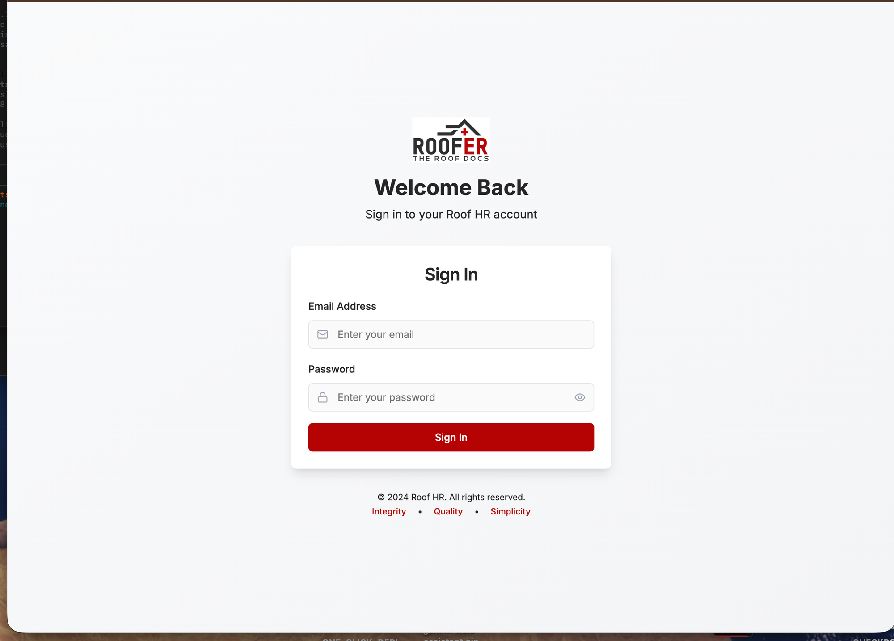
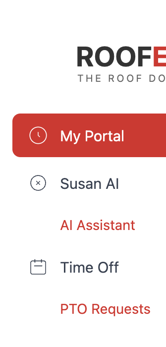
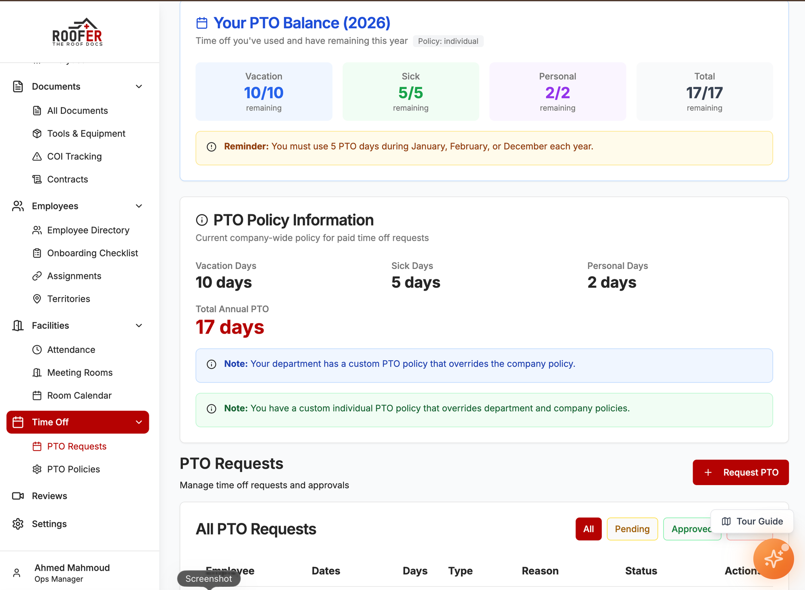
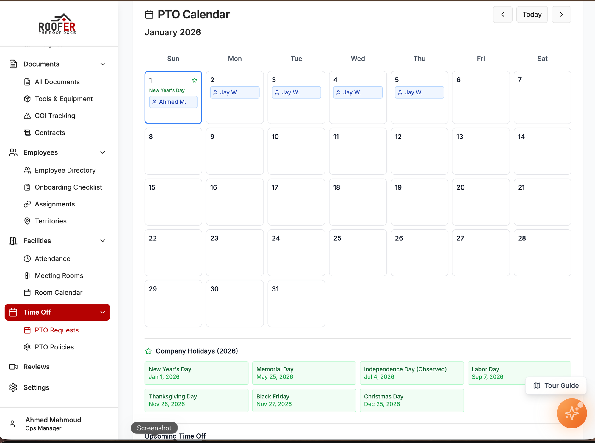

Welcome!
Roof HR is your one-stop shop for HR tasks. As an employee, you have access to the essentials: your personal portal, time off requests, and our AI assistant Susan. This guide will show you exactly where to click!
Quick Actions - What You'll Use Most
Request Time Off
Time Off > PTO Requests
Ask Susan a Question
Susan AI > AI Assistant
Sign a Contract
My Portal > Contracts
1. How to Log In
1
Open your web browser (Chrome, Safari, etc.)
2
Type roofhr.up.railway.app in the address bar
3
Enter your @theroofdocs.com email
4
Enter your password
5
Click the blue "Sign In" button

Login page - enter your email and password, then click Sign In
Forgot your password? Contact ahmed.mahmoud@theroofdocs.com to reset it.
2. Your Menu (Left Sidebar)
After logging in, you'll see a menu on the left side. Here's what you have access to:

Your sidebar: My Portal, Susan AI, and Time Off
3. My Portal - Your Personal Hub
How to Get There:
1
Click "My Portal" in the left sidebar
What You'll See:
*
Your Profile - Name, email, department, position
*
Your Documents - Any documents assigned to you
*
Your Contracts - Employment contracts to sign
*
Your Equipment - Tools and equipment assigned to you

My Portal with your profile, PTO balance, calendar, and quick actions
How to Sign a Contract:
1
Go to My Portal
2
Scroll down to "My Contracts"
3
Click on the contract that says "Pending Signature"
4
Read the contract carefully
5
Type your name in the signature box
6
Click "Sign Contract"
Important: Make sure you read the entire contract before signing!
4. Susan AI - Your HR Assistant
How to Get There:
1
Click "Susan AI" in the left sidebar
2
Click "AI Assistant"
How to Ask a Question:
1
Type your question in the chat box at the bottom
2
Press Enter or click the send button
3
Susan will respond with an answer!

Susan AI chat interface - type your questions here
Things You Can Ask Susan:
- "What is our PTO policy?"
- "How do I submit an expense report?"
- "What are the company holidays?"
- "How do I request time off?"
- "What's the dress code?"
- "Who do I contact for IT help?"
Pro Tip: Susan is available 24/7! No need to wait for HR to respond - get instant answers!
5. Requesting Time Off (PTO)
How to Get There:
1
Click "Time Off" in the left sidebar
2
Click "PTO Requests"

Your PTO Balance showing vacation, sick, and personal days remaining
How to Submit a Request:
1
Click the "Request Time Off" button (usually top right)
2
Select your Start Date (click the calendar)
3
Select your End Date
4
Choose the Type (Vacation, Sick, Personal, etc.)
5
Add any Notes if needed (e.g., "Family vacation")
6
Click "Submit Request"

PTO Calendar showing scheduled time off and company holidays
Checking Your Request Status:
1
Go to Time Off > PTO Requests
2
Find your request in the list
3
Check the
Status column:
- Pending - Waiting for approval
- Approved - You're good to go!
- Denied - Contact HR for details
Note: PTO requests are reviewed by management. Please submit at least 2 weeks in advance when possible!
6. Summary - What You Can Access
| Feature | Can You Use It? |
|---|
| My Portal | YES - View your info, docs, contracts |
| Susan AI | YES - Ask questions anytime |
| Time Off / PTO | YES - Submit and track requests |
| Dashboard | No |
| Recruiting | No |
| Documents | No (use My Portal instead) |
| Employees | No |
| Facilities | No |
| Reviews | No |
| Settings | No |
Need Help?
HR Questions: Ask Susan AI first - she's instant!
Can't Log In: Contact ahmed.mahmoud@theroofdocs.com
Technical Issues: Contact support@theroofdocs.com